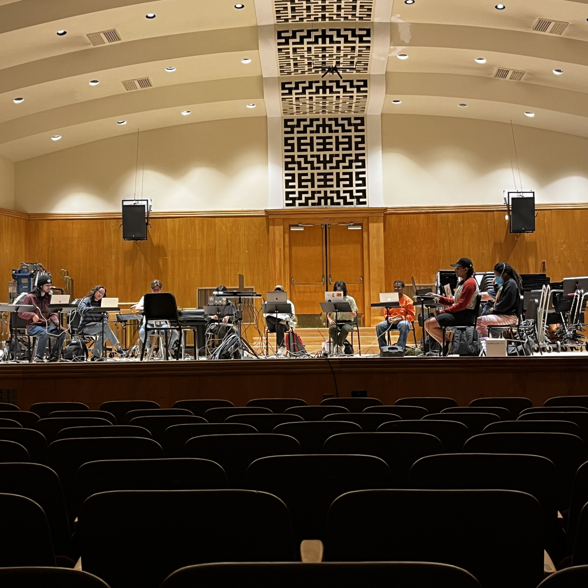

San José State University
While at SJSU, I had the opportunity to co-direct our school's laptop ensemble, where I spearheaded the implementation of Dante — an audio networking protocol and software/hardware suite — for group electronic music performance. Utilizing this framework, we were able to achieve dynamic shared signal processing. This allowed for a more coherent group identity in performance, along with the ability for directors to monitor and mix individual students' contributions and capture high-quality recordings of practice and performance. This piece was an improvisation following the principles studied after our program attended workshops with the improvisationist Fred Frith.